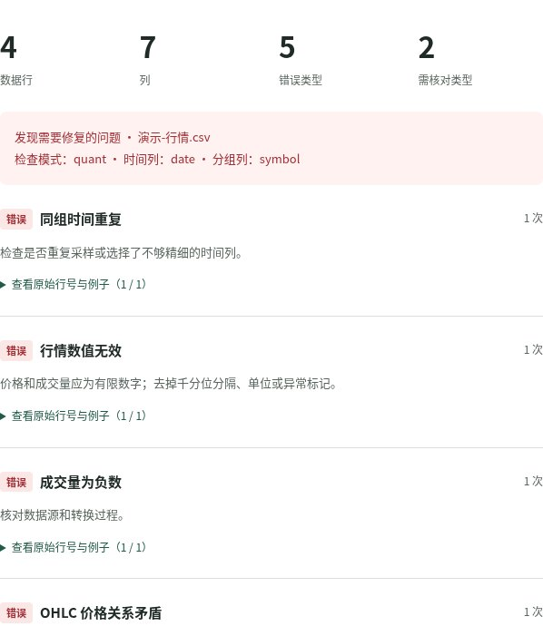
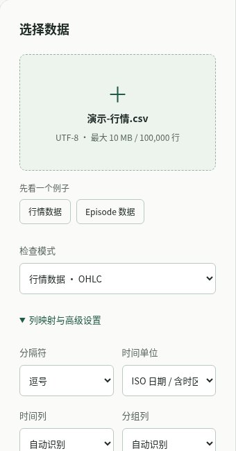
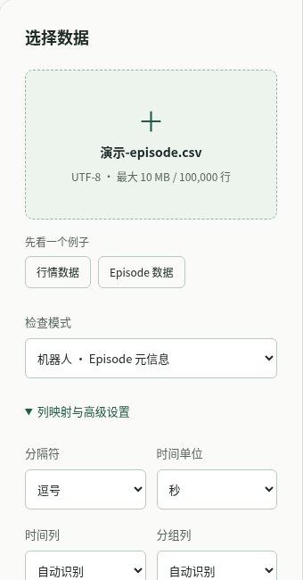
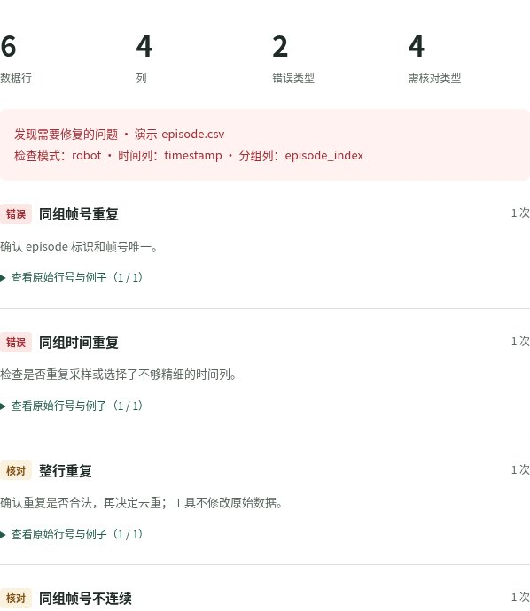

读 AI 消息，先看证据
模型发布很热闹，先分清官方说明、可复现实验和未经验证的判断。
AI这里是 KX 的公开笔记。
记录 AI、数据与机器人，也留下一些能用的小工具。
从一个具体问题开始，
把资料和方法留下来。




截图来自工具内置演示数据。检查结果只说明已配置规则发现的问题，不证明收益或动作安全。
先把问题问清楚，
再做一个小实验。
这里整理值得继续追问的技术问题：怎样读懂一条 AI 发布，怎样检查一份数据，以及怎样迈出机器人学习的第一步。
每篇笔记尽量留下来源、步骤和适用边界。项目可以直接打开体验；暂未验证的部分，也会如实说明。